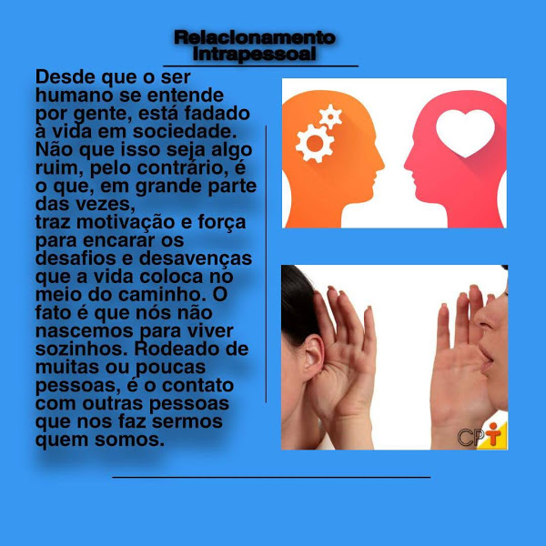
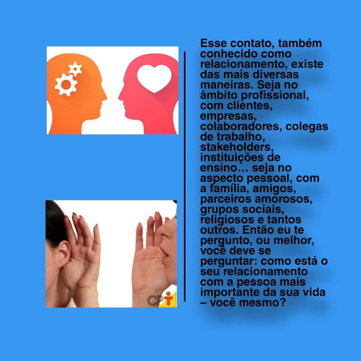
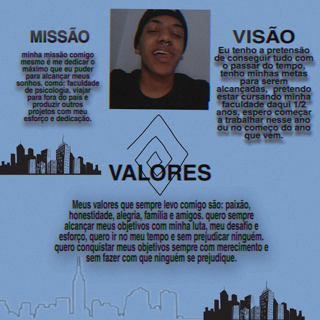

Prjetos que fiz no CAMP
o que fiz na quarentena para espantar o tédio
Quadro Dos Sonhos
abaixo vemos meu quadro dos sonhos,a primeira imagem representa a Minha formatura na
faculdade de psicologia, a segunda representa eu indo estudar no japão, a terceira é
meu proprio Estúdio onde vou produzir minhas próprias musicas
e por ultimo vemos uma
dançarina que representa para mim a vontade de dançar e querer
me tornar um dançarino.
Relação Interpessoal e Relação Intrapessoal
aqui vocês podem ver o que é Relação interpessoal
aqui vemos o que é Relação intrapessoal
 Fizemos um video falando do que se trata, eu fiz a parte de edição do projeto
Missão, Visão e Valor
MISSÃO:
minha missão comigo mesmo é me dedicar o máximo que eu puder para
alcançar meus sonhos,
como: faculdade de psicologia, viajar para fora do pais
produzir outros projetos com meu esforço e dedicação.
VALORES: Meus valores que sempre levo comigo são: paixão, honestidade, alegria, familia e amigos. quero sempre alcançar meus objetivos com minha luta, meu desafio e esforço, quero ir no meu tempo e sem prejudicar ninguém. quero conquistar meus objetivos sempre com merecimento e sem fazer com que ninguém se prejudique.